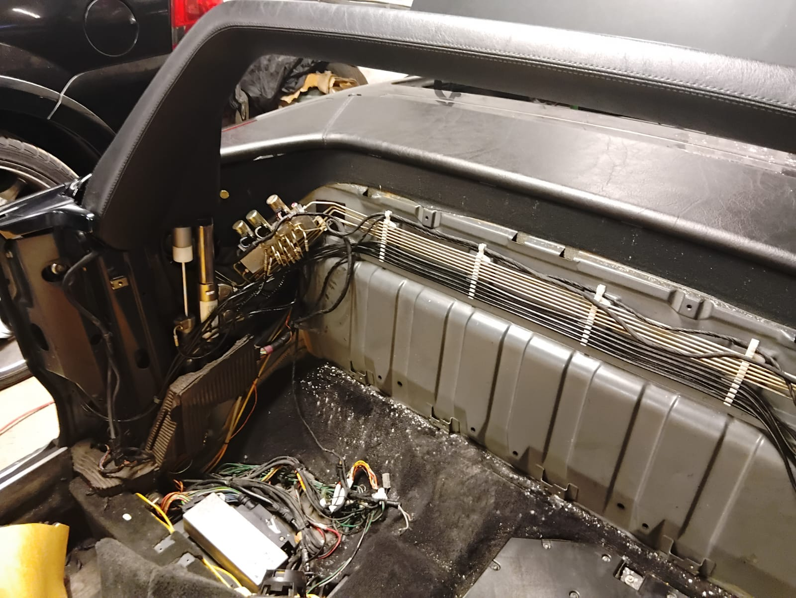
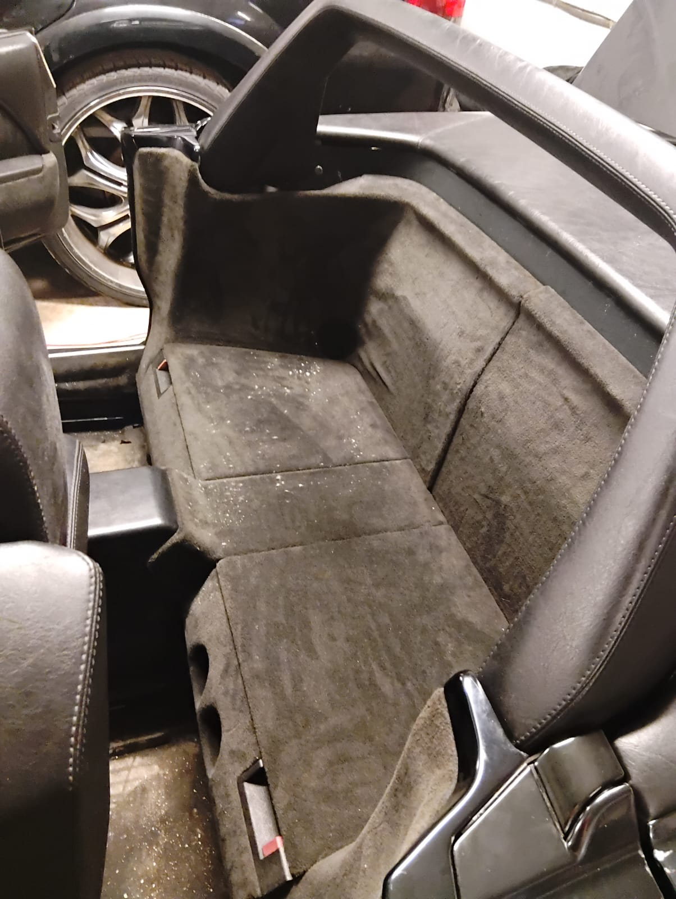
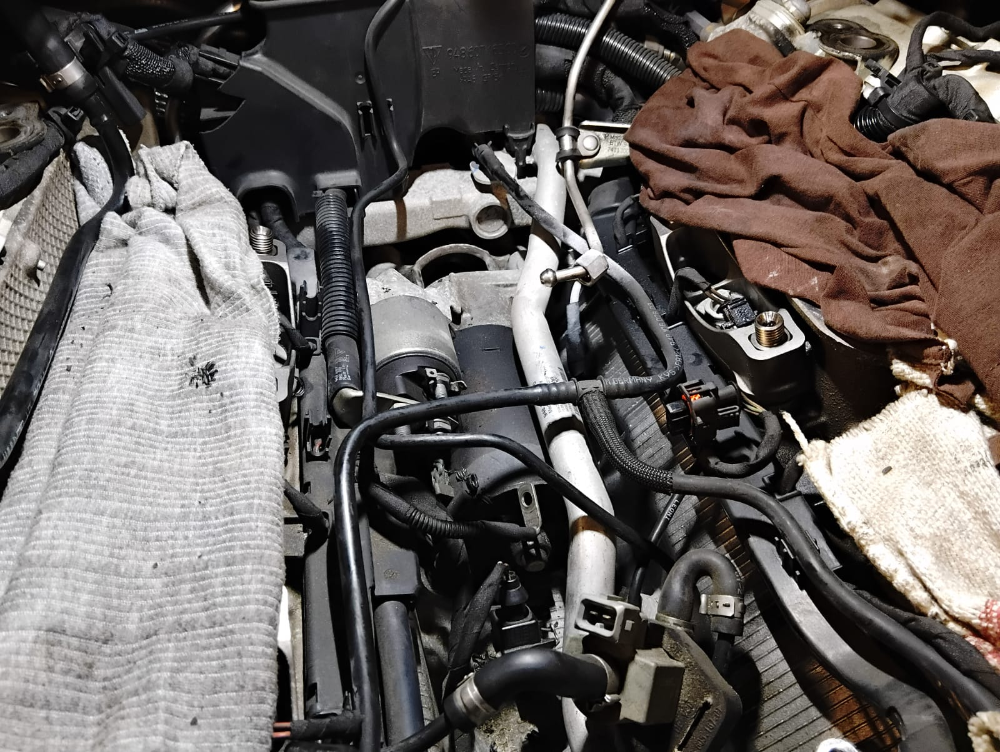
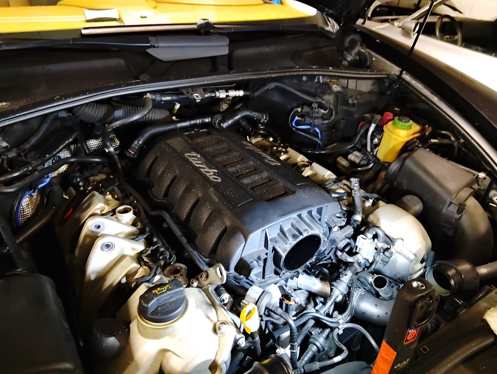
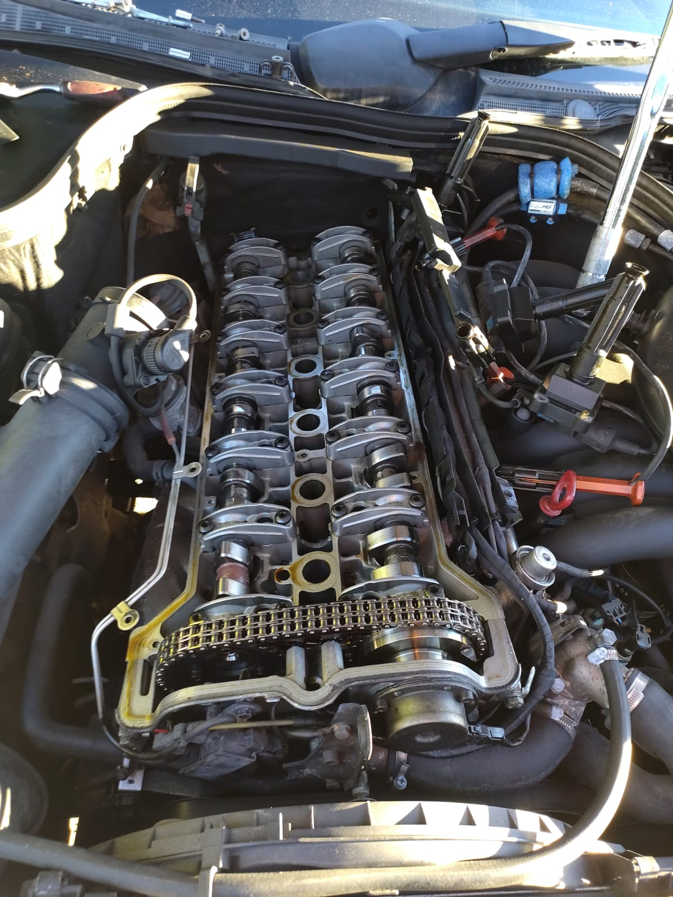
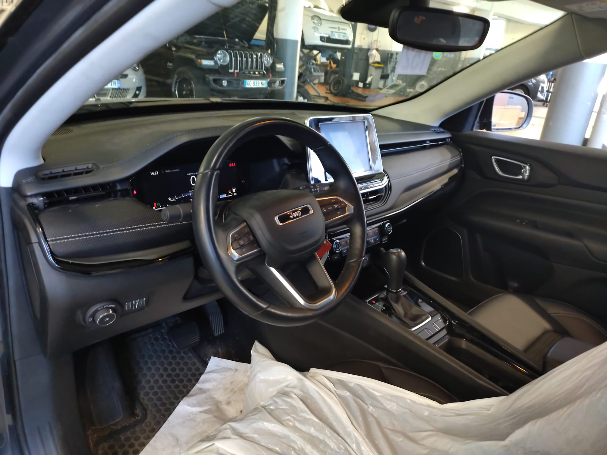
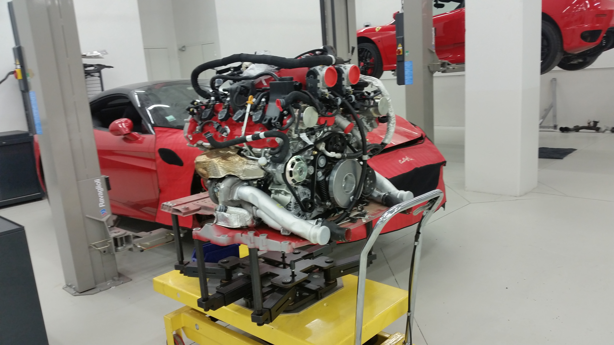
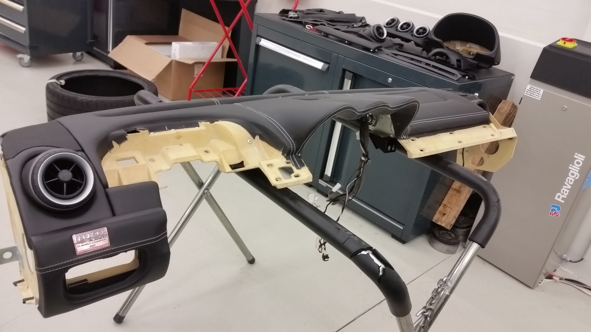
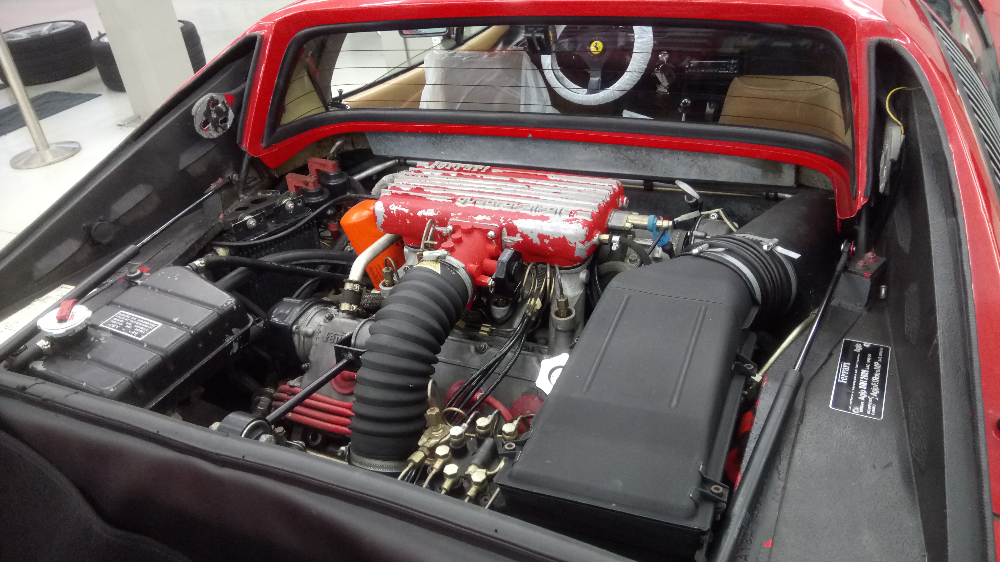
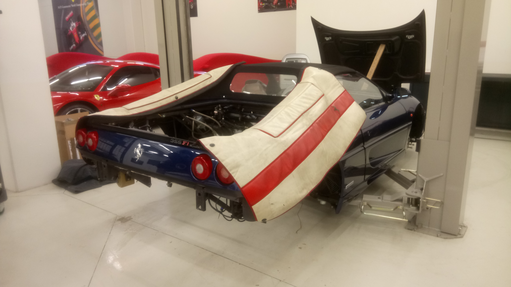

ExpertisesExpertise
Domaines d’intervention.Areas of expertise.
Chaque expertise est présentée avec des photos réelles d’atelier. Les interventions se font sur rendez-vous, après validation de la demande.
Each area is illustrated with real workshop photos. Work is carried out by appointment, after request validation.
Mercedes R129 — capote (hydraulique, mécanique, électrique)roof system (hydraulics, mechanical, electrical)
Diagnostic, remise en état, réglagesDiagnostics, repair, calibration
Intervention complète sur le système de capote hydraulique et ses composants de commande : vérins, flexibles, bloc valves, faisceaux et capteurs. Contrôle des cycles et restitution conforme à l’origine.
Comprehensive work on the hydraulic roof system and its control components: cylinders, hoses, valve block, wiring and sensors. Cycle testing and OEM‑level delivery.

R129 — capote (vue générale)

R129 — hydraulique / faisceau

R129 — commande / composants
Porsche Cayenne Turbo — mécanique major mechanical work
Moteur, suralimentation, périphériquesEngine, boost system, ancillaries

Cayenne Turbo — intervention 1

Cayenne Turbo — intervention 2

Cayenne Turbo — intervention 3

Cayenne Turbo — intervention 4
London Taxi LTI TX4 — boîte de vitessesgearbox
Transmission, contrôle et remise en étatTransmission checks and repair

W140 — boîte de vitesses
Mercedes C36 AMG — Cache culbuteursengine
Fiabilisation, remise à niveauReliability work and refresh

C36 AMG — intervention
Jeep — diagnostic habitacle / électricitéinterior / electrical diagnostics
Faisceaux, modules, remise en conformitéWiring, modules, compliance

Jeep — intervention 1

Jeep — intervention 2
Corvette C3 — restaurationrestoration
Mécanique classique, finitionsClassic mechanical work, finishing

Corvette C3 — restauration
Ferrari California — dépose moteur pour entretienengine removal for service
Procédure atelier, remise en place, contrôlesWorkshop procedure, refit, checks
Dépose du groupe motopropulseur selon procédure constructeur afin de réaliser l’entretien et les opérations périphériques en conditions optimales. Contrôle des raccordements, couples, fluides et essais après repose.
Engine/powertrain removal following manufacturer procedures to perform service and related operations under optimal conditions. Verification of connections, torque settings, fluids and road/functional checks after refit.

Ferrari California — dépose moteur
Ferrari — travail sellerieupholstery work
Habillage, ajustements, finitionsTrims, fitment, finishing
Intervention sur éléments d’habitacle : dépose, remise en état et réassemblage avec attention portée aux ajustements, aux fixations et aux finitions (coutures, alignements, pièces annexes).
Interior trim intervention: removal, refurbishment and reassembly with focus on fitment, fixings and finishing details (stitching, alignment, ancillary parts).

Ferrari — sellerie
Ferrari 328 — moteurengine
Contrôle, remise à niveau, opérations mécaniquesInspection, refresh and mechanical operations
Interventions sur moteur et périphériques : diagnostic, contrôle visuel et fonctionnel, remise à niveau des organes accessibles (alimentation, allumage, refroidissement) et préparation avant essais.
Work on engine and ancillaries: diagnostics, visual and functional checks, refresh of accessible components (fuel, ignition, cooling) and preparation prior to testing.

Ferrari 328 — moteur
Ferrari 355 — dépose moteurengine removal
Accès, entretien, opérations lourdesAccess, service, major work
Dépose moteur pour opérations d’entretien ou travaux nécessitant un accès complet : préparation, déconnexion sécurisée, supportage, puis repose avec contrôles et validation finale.
Engine removal for servicing operations or major work requiring full access: preparation, safe disconnection, supporting and handling, then refit with checks and final validation.

Ferrari 355 — dépose moteur
AtelierWorkshop
Environnement privéPrivate environment

Atelier — vue